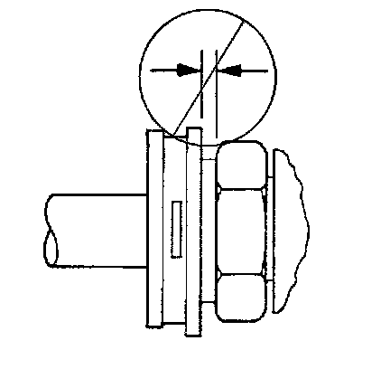

Procedures
Engine Oil Cooler Pipe/Hose Quick Connect Fitting
Removal Procedure
1. Disengage the plastic caps from the quick connect fittings. Pull the caps back along the pipe.
2. Using a bent-tip screwdriver or equivalent, pull on one of the open ends of the retaining ring in order to rotate the retaining ring.
3. Rotate the retaining ring around the quick connector until the retaining ring is out of position and can be completely removed.
Discard the retaining rings.
4. Remove the engine oil cooler line from the quick connector fitting at the radiator.
Pull the lines straight out from the connectors.
5. Clean all of the components in a suitable solvent, and dry them with compressed air.
6. Inspect the fittings, the connectors, the cooler lines, and the cooler for damage, distortion, or restriction. Replace parts as necessary.
Installation Procedure
Important: When performing the following procedure, do not reuse the old retaining rings. Replace the old retaining rings with new ones.
Do not install the new retaining ring onto the fitting by pushing the retaining ring down over the fitting.
1. Install a new retaining ring into each quick connector fitting.
2. Hook one of the open ends of the retaining ring in one of the slots in the quick connector.
3. Rotate the retaining ring around the connector until the retaining ring is positioned with all 3 ears through the 3 slots.

4. Ensure the 3 retaining ring ears can be seen from the inside of the connector and the retaining ring can move freely in the slots.
5. Install the engine oil cooler line into the quick connector fitting until a click is heard or felt.
Pull back on the engine oil cooler lines to ensure a proper connection.

Important: Do not manually depress the retaining clip when installing the plastic cap.
6. Snap the plastic cap onto the quick connect fitting.
7. Ensure that the plastic cap is fully seated against the fitting.

8. Ensure that no gap is present between the cap and the fitting.
9. Inspect and fill the engine oil to the proper level.